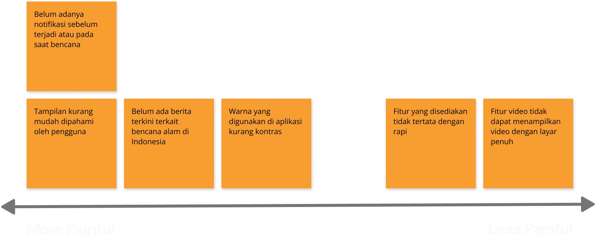
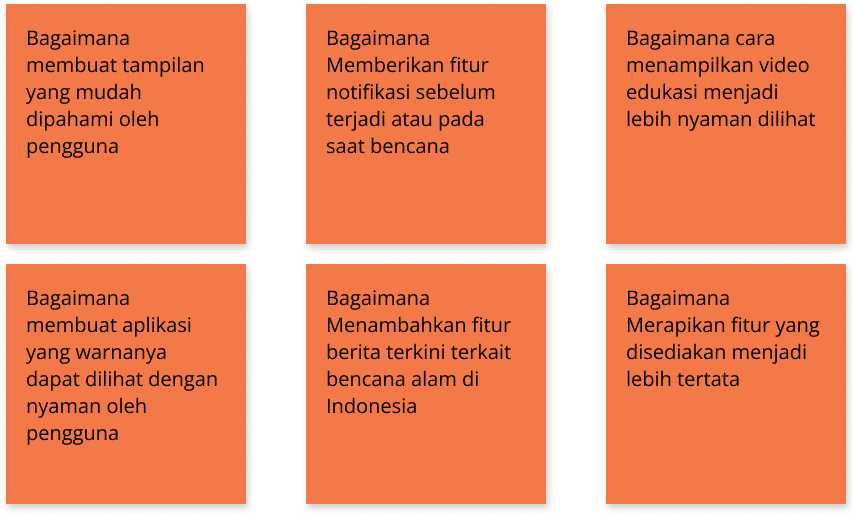
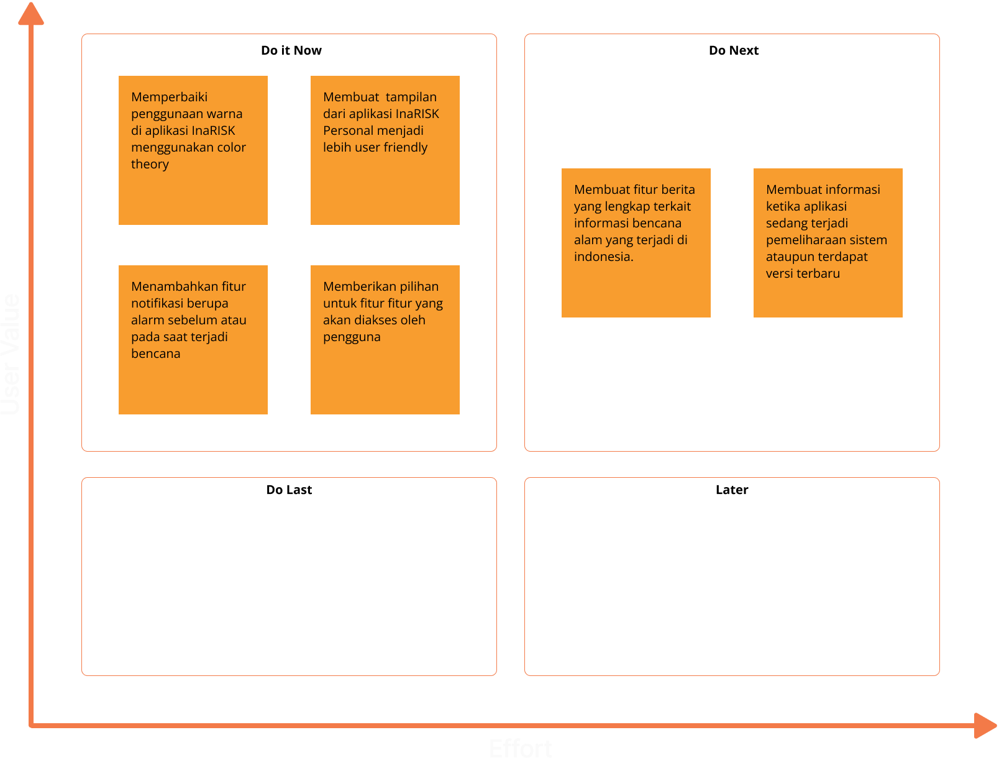
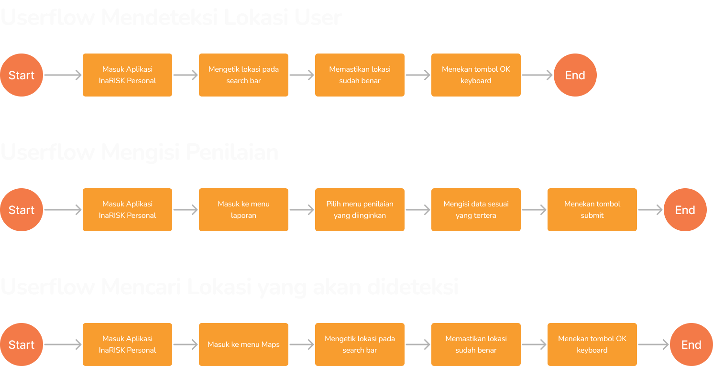
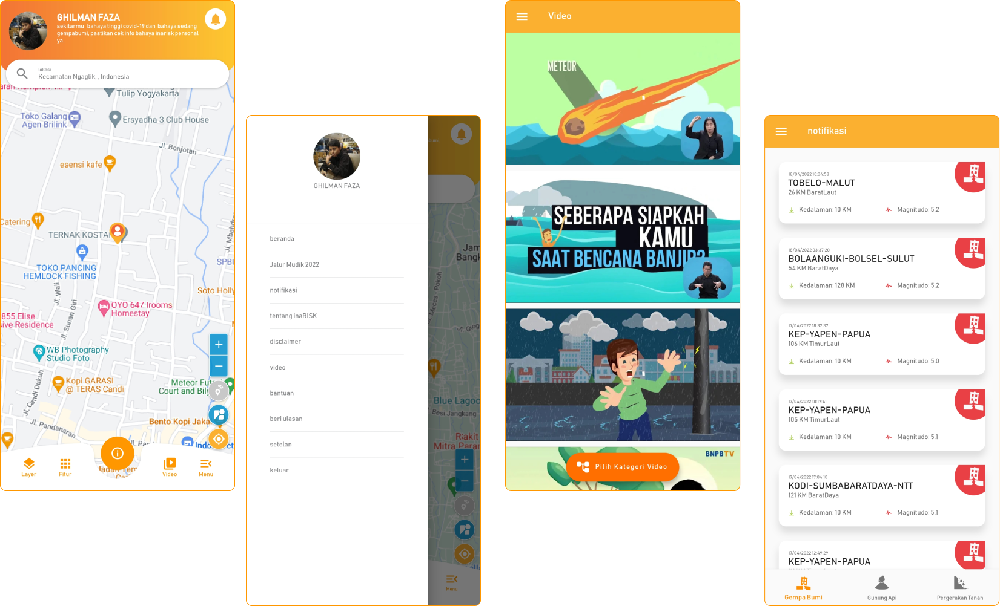
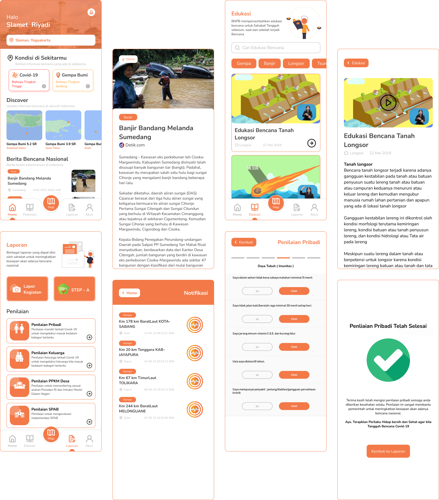
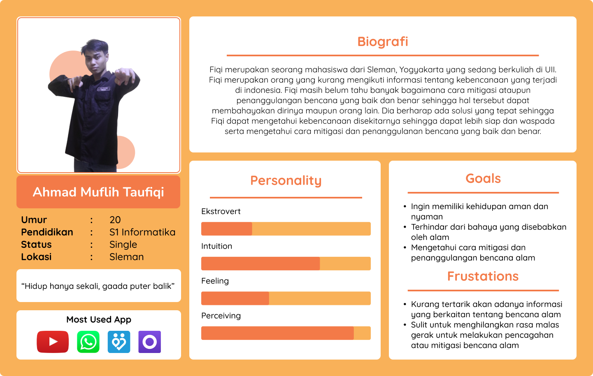
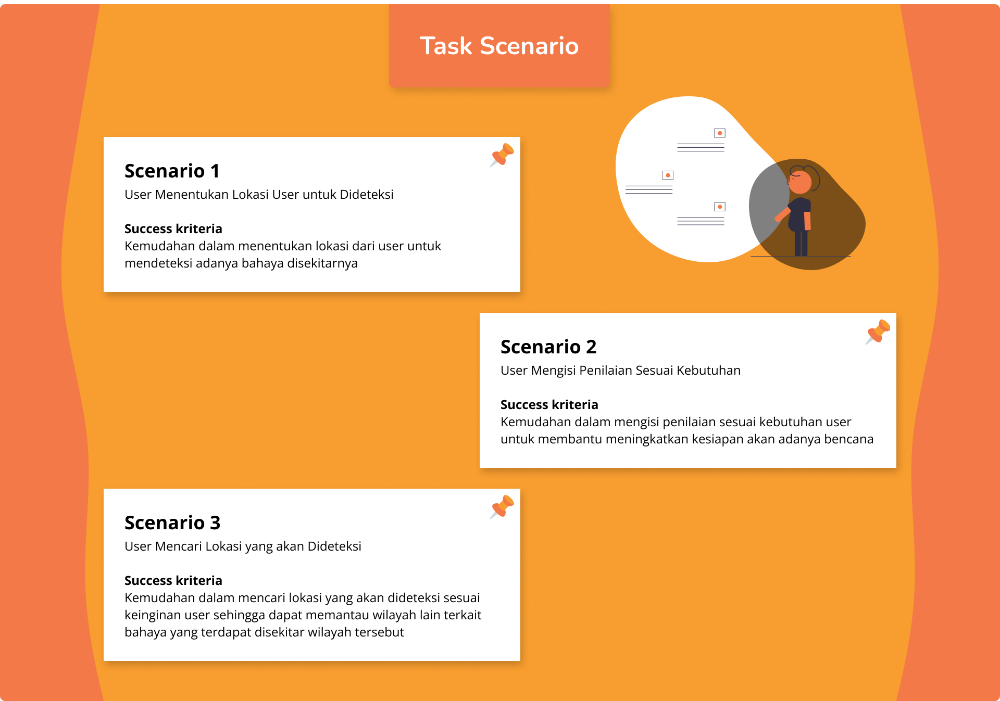

Disclaimer
User Research Plan ini dibuat berdasarkan tugas Weekly Task 2 dan mini project yang diberikan oleh Alterra Academy sebagai tugas untuk program Studi Independen UI/UX
Task in Project
Tools Used
About App
InaRISK Personal merupakan sebuah aplikasi untuk mengetahui bahaya kebencanaan disekitar kita serta upaya yang dapat kita lakukan secara mandiri. Aplikasi ini menggunakan hasil Kajian yang dibangun oleh BNPB (Badan Nasional Penanggulangan Bencana) bersama Kementerian/Lembaga terkait serta dukungan Organisasi kebencanaan yang ada di Indonesia.
Background
Bencana alam sering terjadi di indonesia disebabkan oleh berbagai aktivitas alam itu sendiri atau akibat dari ulah manusia. Agar kita sebagai manusia dapat lebih siap akan datangnya bencana alam yang dapat diprediksi maupun yang sulit, oleh karena itu butuh adanya bantuan dari teknologi,maka hadirlah aplikasi yang bernama InaRISK Personal agar dapat melakukan antisipasi atas bencana alam yang akan terjadi
Timeline
Design Thinking

1. Emphatize
Pada tahap ini dilakukan penelitian untuk lebih memahami pengguna dari aplikasi InaRISK Personal. Terdapat dua jenis research dalam mengumpulkan data di tahap emphatize yaitu Primary Research dan Secondary Research.
Secondary Research
Semua permasalahan pada versi ini didapatkan dari beberapa komentar pengguna yang mendapatkan keluhan terkait aplikasi InaRISK Personal dari berbagai aspek.
Berikut permasalahan yang dialami oleh pengguna ketika Menggunakan aplikasi InaRISK Personal
- Warna yang digunakan di aplikasi kurang kontras
- Tampilan kurang mudah dipahami oleh pengguna
- Belum adanya notifikasi sebelum terjadi atau pada saat bencana
- Belum ada fitur berita terkini terkait bencana alam di Indonesia
- Fitur yang disediakan tidak tertata dengan rapi
- Fitur video tidak dapat menampilkan video dengan layar penuh
2. Define
Setelah melakukan tahap Emphatize yang telah dilakukan, maka didapatkan Pain Point yang menjadi masalah untuk pengguna serta How Might We untuk solusi dari masalah yang dialami pengguna pada saat menggunakan aplikasi InaRISK Personal.
Pain Points

How Might We

3. Ideate
Pada tahap ini, saya memberikan solusi untuk menyelesaikan permasalahan yang disampaikan pada tahap define. Solusi tersebut terbagi menjadi 4 skala prioritas yang akan dijelaskan pada Prioritization Idea. Possible Solution Untuk membantu pengguna lebih nyaman dalam menggunakan aplikasi InaRISK Personal akan diberikan beberapa solusi untuk mengatasi permasalahan tersebut. Dari permasalahan yang dialami oleh pengguna, Berikut beberapa solusi untuk mengatasi permasalahan tersebut.
- Memperbaiki penggunaan warna di aplikasi InaRISK menggunakan color theory
- Membuat tampilan dari aplikasi InaRISK Personal menjadi lebih user friendly
- BMenambahkan fitur notifikasi berupa alarm sebelum atau pada saat terjadi bencana
- Membuat fitur berita yang lengkap terkait informasi bencana alam yang terjadi di indonesia.
- Membuat informasi ketika aplikasi sedang terjadi pemeliharaan sistem ataupun terdapat versi terbaru
- Memberikan pilihan untuk fitur fitur yang akan diakses oleh pengguna
Prioritization Idea

Userflow Langkah-langkah yang sudah divisualisasikan dan dapat diikuti pengguna melalui aplikasi untuk menyelesaikan satu atau beberapa tugas
4. Prototype
Membangun serta membuat representasi dari ide ide yang telah didapatkan dari tahap ideate
Before

After

5. Test
Memberikan sebuah skenario kepada pengguna untuk menyelesaikan satu atau lebih tugas terhadap suatu design tampilan atau prototype serta melakukan pengujian dengan pengguna untuk mendapatkan feedback.
User Persona

Usability Test
Sebuah sesi untuk memberikan sebuah skenario kepada user untuk menyelesaikan satu atau lebih tugas terhadap suatu design tampilan interface atau prototype.

Hasil Testing
Post Question
- Seberapa mudah menurut anda flow dari skenario 1 ( user menentukan lokasi user untuk dideteksi )? 1-6
- Seberapa mudah menurut anda flow dari skenario 2 ( user mengisi penilaian sesuai kebutuhan ) ?
- Seberapa mudah menurut anda flow dari skenario 3 ( user mencari lokasi yang akan dideteksi ) ?
- Saran terkait design atau prototype aplikasi yang ditampilkan
Answer Question
- 6 (Sangat mudah). Disini pengguna merasa lebih mudah untuk menentukan lokasi user yang akan dideteksi, karena terdapat informasi yang menunjukan dimana letak mencari lokasi yang akan dideteksi
- 5 (Mudah). Pengguna merasa lebih mudah mengisi penilaian karena terdapat menu khusus untuk keseluruhan penilaian ataupun survey yang disediakan.
- 5 ( Mudah ). Disini pengguna tidak perlu bingung karena untuk fitur mencari lokasi yang akan dideteksi sudah ada
- Pengguna merasa tulisan di edukasi bencana terlihat kurang besar sehingga dapat dibuat lebih besar lagi, pengguna merasa tulisan di berita terlihat kurang besar.